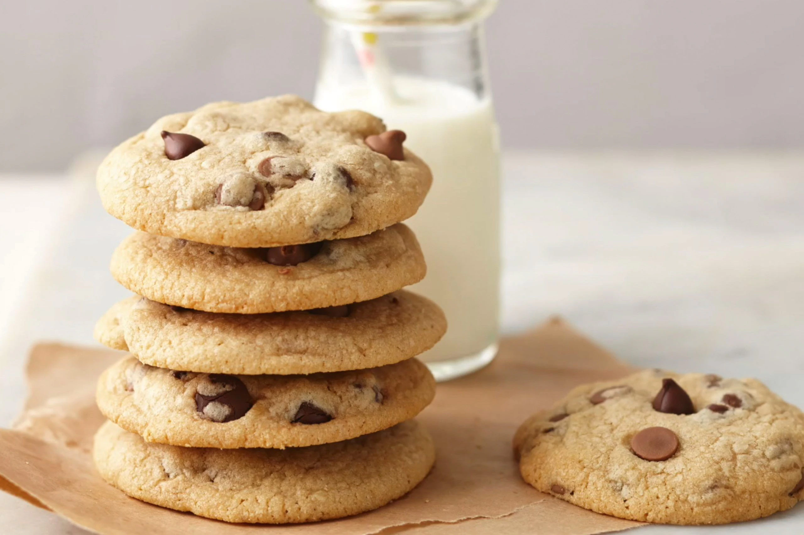

Chocochip cookie Recipe

Description
Indulge in the timeless delight of homemade chocolate
chip cookies. With a perfectly golden-brown exterior and
a soft, chewy center, each bite is a symphony of rich,
buttery dough interlaced with pockets of gooey, melted
chocolate. Whether enjoyed warm from the oven or savored
with a glass of cold milk, these cookies are a comforting
treat that never fails to satisfy
Ingredients
- 1 cup (2 sticks) unsalted butter, at room temperature
- 3/4 cup granulated sugar
- 3/4 cup packed light brown sugar
- 2 large eggs
- 1 teaspoon vanilla extract
- 2 1/4 cups all-purpose flour
- 1 teaspoon baking soda
- 1/2 teaspoon salt
- 2 cups semisweet chocolate chips
Steps
- Preheat your oven for perfect cookies:
Set the oven to 375°F (190°C) and prepare your baking sheets with parchment paper or silicone mats.
- Cream your way to cookie perfection:
In a large mixing bowl, blend together the room temperature butter, granulated sugar, and light brown sugar until luxuriously smooth.
- Egg-cellent addition:
Beat in the eggs, one at a time, ensuring each is fully incorporated, and then infuse the mixture with aromatic vanilla extract.
- Blend with precision:
In a separate bowl, whisk together the all-purpose flour, baking soda, and salt, ensuring a uniform blend of dry ingredients.
- Marriage of wet and dry:
Gradually introduce the dry ingredients into the wet mixture, stirring until just combined, avoiding overmixing for tender cookies.
- Chocolatey embrace:
Gently fold in the semisweet chocolate chips, ensuring they're evenly distributed throughout the dough, creating pockets of melted indulgence.
- Portion with care:
Using a cookie scoop or spoon, dollop rounded tablespoons of dough onto the prepared baking sheets, allowing ample space for spreading.
- Golden transformation:
Bake in the preheated oven for 8 to 10 minutes until the edges turn lightly golden brown, heralding the perfect bake.
- Brief resting period:
Let the cookies cool on the baking sheets for a few minutes to set before transferring them to a wire rack to cool completely.
- Savor the sweetness:
Enjoy your homemade chocolate chip cookies warm or at room temperature, and store any leftovers in an airtight container for continued
blissful enjoyment.
Home